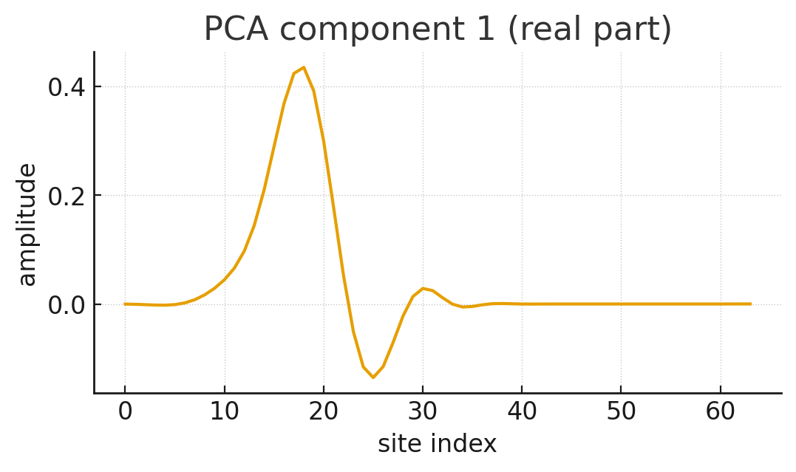
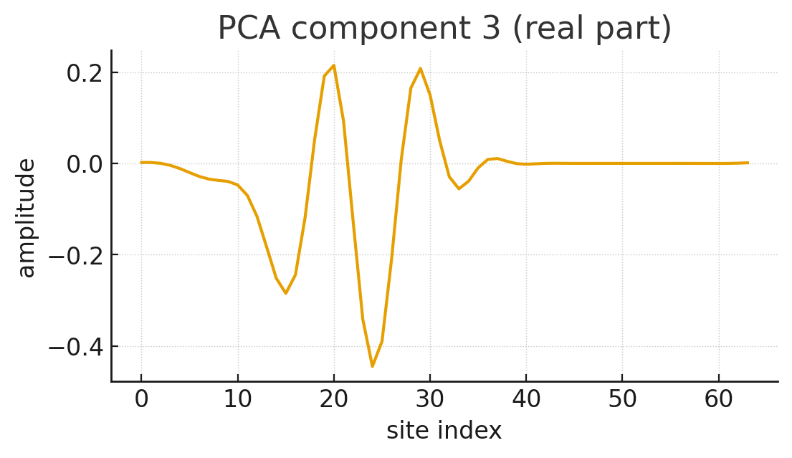
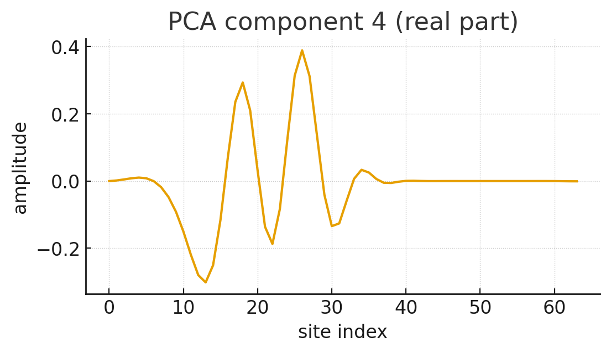
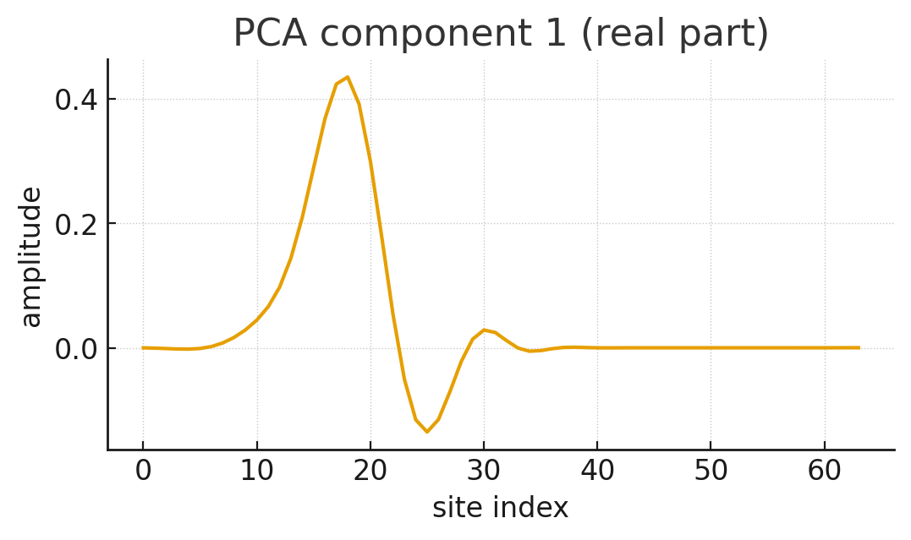
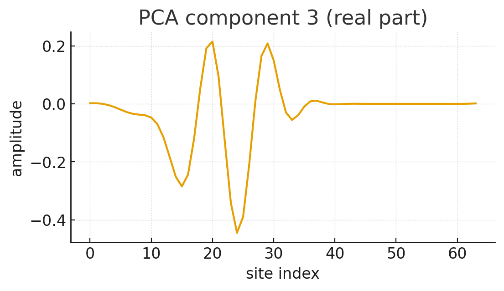
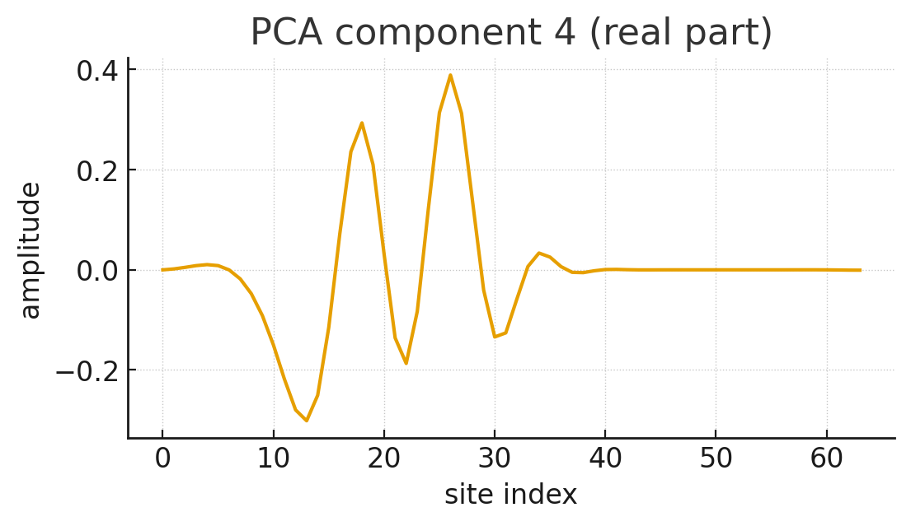

 
 
2019
Building on the informational interpretation of reality and the emergence of structure from entropy (Papers II–IV), we propose that the quantum wave function is not a primary physical entity but a universal compression algorithm. In this framework, the deterministic evolution of \(\psi\) encodes the most probable, compressed representation of all underlying information. We present a computational simulation in a linear quantum system, demonstrating that coefficient dynamics derived from compression-optimal bases reproduce near-unitary evolution and approximately Hermitian generators. These results suggest that the formal structure of quantum mechanics arises naturally from information-theoretic optimization, supporting a view in which physics is the study of efficiently encoded informational outputs rather than fundamental ontological processes.
Our theory rests on three fundamental assumptions:
The cosmos is fundamentally informational, characterized by “white noise,” representing the myriad of virtual particles and ephemeral fluctuations at the quantum foam level—short-lived, small, random informational structures. However, interspersed within this randomness are sections that encode profound symmetries.
In any set of information, the number of highly compressed sequences (those with low Kolmogorov complexity) will statistically dominate over purely random, incompressible sequences in terms of persistence and structure. Maximum compression implies maximum probability. Predictable information compresses well, which explains why we find ourselves in a universe that is the most probable one, governed by predictable laws of physics.
The wave function \(\psi\) is the universal compression algorithm of the cosmos. The deterministic evolution described by quantum mechanics, which governs the behavior of microstructures, is the direct consequence of this algorithm’s operation.
To explore the “wave function-as-compression-coefficients” idea, we designed a simulation to test its predictions in a linear regime.
We consider a 1D lattice with \(N=64\) sites. We simulate the time evolution of a single-particle tight-binding model, which is a standard representation of a particle hopping between nearest-neighbor sites. This model is governed by a nearest-neighbor hopping Hamiltonian, resulting in complex wave functions \(\psi(t)\) over \(T=200\) timesteps.
The simulated time evolution adheres to the Schrödinger equation: \[i\hbar \frac{\partial}{\partial t} \psi(x,t) = H \psi(x,t)\] where \(H\) is the tight-binding Hamiltonian. For simplicity, we set \(\hbar=1\).
From the complex wave function \(\psi_t\) at each timestep \(t\), we generate “observed frames” in two variants:
Real part: \(x_t = \text{Re}(\psi_t)\)
Intensity (probability density): \(x_t = |\psi_t|^2\)
Principal Component Analysis (PCA): We applied PCA to the dataset of frames \(\{x_t\}_{t=1}^{T}\). PCA finds an orthogonal basis that best captures the variance in the data. We projected the data onto the top 8 principal components, yielding coefficient vectors \(\{c_t\}\) where \(c_t \in \mathbb{R}^8\).
Linear Propagator Fitting: Assuming the compression process generates deterministic evolution in the coefficient space, we fit a linear propagator matrix \(G\) between successive vectors using least squares: \[c_{t+1} \approx G c_t\]
Unitarity and Hermiticity Test: We test if the propagator \(G\) is approximately unitary (\(G^\dagger G \approx I\)) and if the generator \(H_{gen} = -i \log G\) is approximately Hermitian (\(H_{gen}^\dagger \approx H_{gen}\)).
The simulation produced the following key visualizations:

 


The simulation yielded significant positive support for the hypothesis. In a clean, linear-unitary toy model, a compression-optimal linear basis produces coefficient dynamics that are demonstrably near-unitary and possess a near-Hermitian generator. This behavior precisely matches the predictions of our informational theory.
While the simulation provides compelling initial support, we acknowledge several limitations:
Linearity Assumption: PCA is a linear transform. If the relationship between bitstrings and amplitudes is nonlinear.
Decoherence: The model neglects the effects of open quantum systems.
We propose that reality can be viewed as a geometric interpretation of information, with the wave function acting as a universal compression algorithm. Finiteness observed in physics is not merely a boundary condition, but statistical phenomenon. The universe does not deal in infinities because infinities cannot be efficiently stored or propagated by a maximally compressing system and are hence unprobable.
Spectral Selection Principle (SSP): The foundational principle asserting that reality is the subset of informational paths that admit the most efficient representation in the frequency domain. It replaces "laws of physics" with a statistical preference for compressibility.
Observer Filter
The measure of information required to represent a state or path \(\gamma\). In this framework, \(\mathcal{L}\) replaces the classical concept of Action. Minimizing \(\mathcal{L}\) is equivalent to the Principle of Least Action.
The subset of all possible configuration sequences capable of describing a subjective experience.
Recurring, compressible bit-patterns within configuration space (e.g., particles, fields). The density of these motifs determines the local spectral cost, manifesting as mass-energy.
The "Planck Scale" of the theory. It is the maximum frequency supportable by the discretization of configuration space. Any structure below this limit is mathematically "aliased" and cannot be rendered.
The sequential ordering of states along a path \(\gamma\). An emergent property of the observer’s trajectory.
The informational alignment between disparate parts of the spectral encoding. This provides the mathematical basis for what is traditionally called quantum entanglement.